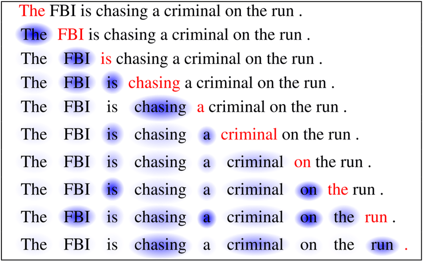
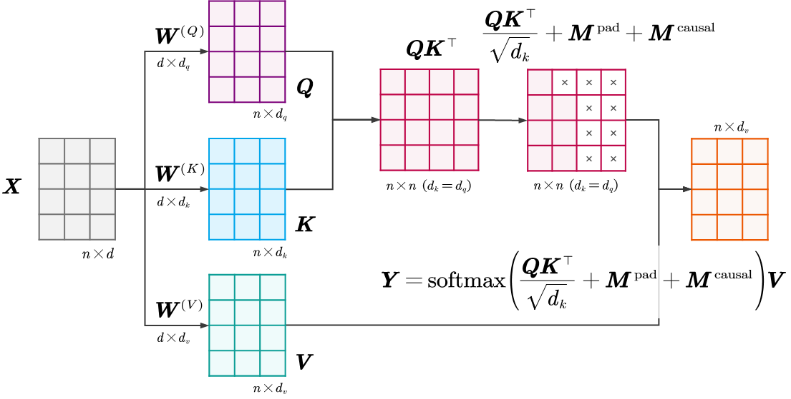
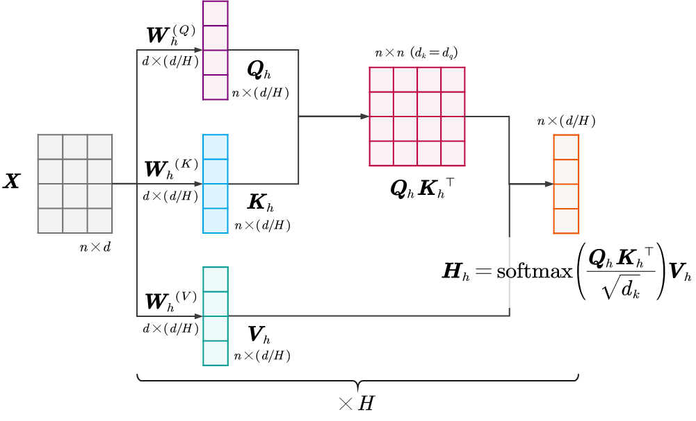

注意力掩码
这里，我们介绍自注意力机制中一个重要的组件——注意力掩码 (Attention Masks)。
在标准的自注意力机制中，默认假设是序列中的每一个Token都可以“看见”并关注序列中的其他所有Token。但在实际应用中，这种全连接的关注并不总是合法的，甚至可能是有害的。
屏蔽的动机
主要有两个场景迫切需要我们对注意力矩阵进行“修剪”：
A. 处理变长序列
在深度学习训练中，为了并行计算提高效率，我们通常将多个样本打包成一个Batch。
然而，自然语言中的句子长度是不一的。为了将不同长度的句子放入同一个矩阵（Tensor）中，我们必须将短句子填充 (Padding) 到和长句子一样的长度。通常使用无意义的占位符（如<P>或0）。
例如，I swam across the river .和It is raining .。
Batch=⎣⎡[I,swim,across,the,river,.][It,is,raining,.,<P>,<P>]⋮⎦⎤ 对于其中一个序列，[It,is,raining,.,<P>,<P>]。假设我们正在计算Token raining (该序列中的第i=3个Token) 的新表示。计算过程如下： yraining=α3,1vIt+α3,2vis+α3,3vraining+α3,4v.+α3,5v<P>+α3,6v<P> 由于αi,j是Softmax的输出，且Softmax函数永远大于0，因此，α3,5和α3,6的值也会大于0。 α3,5, α3,6=Softmax(qswim⋅k<P>)=eqswim⋅kIt+⋯+eqswim⋅k<P>eqswim⋅k<P>>0 后果：这意味着，毫无意义的占位符<P> 也参与了加权平均。新向量yswim里混入了无用信息 (v<P>)，这会直接破坏单词的语义表示。 因此，我们需要在 Softmax 之前，屏蔽掉所有涉及<P> 位置的注意力连接。例如，强行把qswim⋅k<P>的得分变成−∞： α3,5, α3,6=Softmax(qswim⋅k<P>)=eqswim⋅kIt+⋯+e−∞e−∞≈0 这样e−∞=0，从而保证α3,5和α3,6的值保持为0，彻底切断噪声。 yraining=α3,1vIt+α3,2vis+α3,3vraining+α3,4v.+0 v<P>+0 v<P> 这个方法就是“填充掩码 (Padding Mask)”的思想。
B. 防止未来信息泄露
在 GPT 等生成模型训练中，我们使用Teacher Forcing，即把完整答案["A", "B", "C", "D"]一次性喂给模型，但要求模型模拟“逐字生成”。
例如，我们把The FBI is chasing a criminal on the run.一次性喂给模型，但模型在生成过程中（生成到红字的时候），不能看到后面的文字（需要预测的真实标签）。

这个过程可以表示为：假设模型正在学习预测序列中的第3个词is。
- 输入：
["The", "FBI", "is", "chasing"] - 当前位置：i=2 (对应词
FBI)。 - 目标：利用
The 和FBI的信息，预测下一个词is。
如果没有掩码，自注意力机制会计算i=2与所有位置的相似度，包括需要预测的真实标签j=3(is) 和j=4 (chasing)： Score2,3=qFBI⋅kis ;Score2,4=qFBI⋅kchasing 后果：因为kis和vis已经包含了答案is的完整信息。模型会发现：与其辛苦学习语法规则来预测is，不如直接把注意力权重 100% 给到位置3，直接把vis拿过来用（抄答案）。 此时，模型退化成了一个单纯的复读机，损失函数极低，但在测试时（没有未来信息可看）会彻底失效。
一种解决办法是，对于相似度矩阵QK⊤中的任意元素(i,j)： Score=QK⊤=⎣⎡q1⊤k1⋮qn⊤k1q1⊤k2⋮qn⊤k2…⋱…q1⊤kn⋮qn⊤kn⎦⎤ 如果j>i（列索引 > 行索引，即在当前位置之后的Token），则必须屏蔽。 Scorei,j=−∞,if j>i ⎣⎡q1⊤k1⋮qn⊤k1−∞⋮qn⊤k2…⋱…−∞⋮−∞⎦⎤ 这样经过Softmax函数归一化处理后，得到的αi,j中： αi,j=0,if j>i 这确保了“在当前位置之后的第j个Token”不会参与到“当前第i个Token”的新表示的计算中。 yFBI=α2,1vThe+α2,2vFBI+α2,3vis+α2,4vchasing+…=α2,1vThe+α2,2vFBI+0⋅vis+0⋅vchasing+… 这个方法就是“因果掩码 (Causal Mask)”的思想。
掩码矩阵的构造
为了在数学上实现这种“屏蔽”，我们引入一个掩码矩阵M，并重写注意力公式。 Attention(Q,K,V;M)=softmax(dkQK⊤+M)V 这个公式的关键在于：在进行 Softmax 归一化之前，我们将掩码矩阵M直接加到了缩放后的相似度得分矩阵上。 M∈Rn×n编码了硬性的可见性约束 (Hard Visibility Constraints)。它不是模型学习出来的参数，而是根据序列结构（Padding 位置或因果顺序）预先人工构造好的。 Mij={0,−∞,allowed (允许关注)blocked (禁止关注) - 0：表示第i个Token可以关注第j个Token。因为x+0=x，原本的相似度得分保持不变。
- −∞：表示第i个Token 绝对不能关注第j个Token。
为什么是−∞？使用负无穷大（在代码实现中通常使用一个极小的负数，如−109）是为了利用Softmax函数的性质来实现“彻底屏蔽”。 相似度得分会经过Softmax公式进行归一化，假设原本的得分为Scoreij（下面用Sij表示）： aij=Softmax(Sij+Mij)=∑kexp(Sik+Mik)exp(Sij+Mij) 当Mij=−∞时： aij=∑kexp(Sik+Mik)exp(Sij+(−∞))=∑kexp(Sik+Mik)exp(−∞)≈0 - 分子为0：该位置的注意力权重aij会变成0。这意味着Value向量vj不会被加权聚合到输出中。
- 分母不受影响：该项在分母求和中也为0，不会影响其他合法位置的概率分布。
- 梯度阻断：由于权重为0，反向传播时该路径的梯度也为0，彻底切断了信息流。
总之，注意力掩码不仅仅是一个技术细节，它是Transformer能够正确处理批次数据（通过Padding Mask）和执行生成任务（通过Causal Mask）的前提条件。它通过在Softmax之前的简单加法操作，实现了对信息流动的精确控制。
Transformer有两种最核心的掩码机制：Padding Mask（填充掩码）和Causal Mask（因果掩码）。
我们可以把它们分别理解为“噪声过滤器”和“时间屏障”。
填充掩码 (Padding Mask)
回顾一下，当我们将变长的句子打包成一个Batch进行并行训练时，必须把短句子用无意义的PAD符号<P>补齐到最长句子的长度。这些PAD符号就像是混入真实信号中的“噪声”，如果不加处理，模型会尝试去理解和聚合这些无意义的符号。
数学构造步骤
1.定义指示向量p：首先，定义一个布尔向量（或0/1向量）p∈{0,1}n，用来标记序列中哪些位置是填充物<P>。 pj={1,0,if j is <P>other 例如，我们的Batch中有一条长度为4的序列：[I, swim, <P>, <P>]。即n=4，其中前两个是真实词，后两个是填充词。 p=⎣⎡0011⎦⎤←I←swim←<P>←<P> 2.构造掩码矩阵Mpad：我们需要构造一个n×n的矩阵。关键点在于：只要第j列（Key的位置）是PAD，那么无论第i行（Query的位置）是谁，都不应该关注它。 Mpad=1p⊤⋅(−∞) - p⊤是一个行向量。
- 1是全1的列向量。
- 它们的乘积1p⊤会通过广播机制（Broadcasting），把p复制到每一行。
- 结果：如果第j个Token是PAD，那么Mpad的整个第j列都会变成−∞；如果不是，则为0。
Mijpad={−∞,0,pj=1pj=0 例如，[I, swim, <P>, <P>]，构造出的掩码矩阵为：
Mpad=1p⊤⋅(−∞)=⎣⎡1111⎦⎤[0011]⋅(−∞)=⎣⎡00000000−∞−∞−∞−∞−∞−∞−∞−∞⎦⎤ 应用到注意力机制
Y=softmax(dkQK⊤+Mpad)V 例如，对于[I, swim, <P>, <P>]，假设QK⊤/dk计算出的相似度得分如下： Scaled Score=⎣⎡107……89……51……24……⎦⎤ 现在加上掩码矩阵Mpad： ⎣⎡107……89……51……24……⎦⎤+⎣⎡00……00……−∞−∞……−∞−∞……⎦⎤=⎣⎡107……89……−∞−∞……−∞−∞……⎦⎤ Softmax(…)≈⎣⎡0.880.12……0.120.88……00……00……⎦⎤ 通过这种矩阵操作，第3和第4个位置的权重被强制归零。模型在聚合信息时，就像这两个 PAD 根本不存在一样，彻底消除了噪声的影响。
也就是说，这确保了任何Query在计算注意力时，对于那些作为Padding的Key，其注意力权重都被强行置为0。
因果掩码 (Causal Mask)
回顾一下，在像GPT这样的自回归生成模型中，生成过程是严格遵循时间顺序的。当模型试图预测第i个词时，它绝对不能“偷看”到i之后的词（未来的答案）。必须严格保证因果性 (Causality)。 数学构造步骤
1.定义下三角矩阵Mcausal：我们需要构建一个“时间屏障”。对于矩阵中的元素Mij（表示第i个词关注第j个词）： - 如果j≤i（过去和现在）：允许关注，值为0。
- 如果j>i（未来）：严禁关注，值为−∞。
Mijcausal={0,−∞,j≤ij>i 这就形成了一个经典的下三角 (Lower-Triangular) 矩阵结构：
Mcausal=⎣⎡00⋮0−∞0⋮0−∞−∞⋮0……⋱0−∞−∞⋮0⎦⎤ 假设我们的输入序列是[I, swim, every, day]（n=4）。 Mcausal=⎣⎡0000−∞000−∞−∞00−∞−∞−∞0⎦⎤ - 第1行 (Token A)：对应矩阵行
[0, -inf, -inf, -inf]。 这意味着I只能关注I自己。它看不见swim, every, day。 - 第2行 (Token B)：对应矩阵行
[0, 0, -inf, -inf]。 这意味着swim可以关注I和swim。但它看不见 every, day。 - 第3行 (Token C)：对应矩阵行
[0, 0, 0, -inf]。 这意味着every可以关注I, swim, every。但它看不见day。
应用到注意力机制
Y=softmax(dkQK⊤+Mcausal)V 假设相似度得分Score如下： dkQK⊤=⎣⎡10654910658910678910⎦⎤ 加上因果掩码Mcausal： ⎣⎡10654910658910678910⎦⎤+⎣⎡0000−∞000−∞−∞00−∞−∞−∞0⎦⎤=⎣⎡10654−∞1065−∞−∞106−∞−∞−∞10⎦⎤ Softmax(…)≈⎣⎡1.000.380.240.1600.630.290.20000.480.240000.40⎦⎤ 经过 Softmax 后，所有右上角的概率全部变为0。模型在加权聚合信息时，它只能基于当前Token和之前的Token来构造当前Token的新表示，也就是说只能用历史信息来预测未来。
带掩码的注意力机制
掩码的联合应用
在实际的解码器（Decoder）训练中，我们通常同时需要这两种掩码。既不能看未来的词，也不能看Padding的词。
Y=softmax(dkQK⊤+Mpad+Mcausal)V 这利用了−∞的“吞噬”特性，只要某一元素的位置有−∞出现（任意一个掩码说“不许看”），那么该位置的最终得分就是−∞。其对应的Softmax的输出值即为0。这确保了所有非法的注意力连接都被彻底阻断。 例如，假设序列是[A, B, <P>, <P>]，那么Mpad+Mcausal： ⎣⎡00000000−∞−∞−∞−∞−∞−∞−∞−∞⎦⎤+⎣⎡0000−∞000−∞−∞00−∞−∞−∞0⎦⎤=⎣⎡0000−∞000−∞−∞−∞−∞−∞−∞−∞−∞⎦⎤ 那么dkQK⊤+Mpad+Mcausal： ⎣⎡10654910658910678910⎦⎤+⎣⎡0000−∞000−∞−∞−∞−∞−∞−∞−∞−∞⎦⎤=⎣⎡10654−∞1065−∞−∞−∞−∞−∞−∞−∞−∞⎦⎤ Softmax(…)≈⎣⎡1.000.380.450.4400.630.550.5600000000⎦⎤ 
掩码注意力模块
我们已经详细探讨了掩码多头注意力机制（Masked Multi-Head Attention, MMHA），理解了模型如何通过“自注意力”机制捕捉序列内部的依赖关系，并通过“掩码”保证生成的自回归性质（即只能看过去，不能看未来）。
现在，我们简单回顾之前学习的掩码自注意力机制，并将其总结为一个模块。
模块的输入与输出
Batch=I,swim,every,dayMoney,in,the,bank⋮⎣⎡X1X2⋮⎦⎤⟶X2=Moneyinthebank⎣⎡x1⊤x2⊤x3⊤x4⊤⎦⎤ 输入X∈Rn×d：一个文本序列（句子），包含n个Token（词），每个Token由d维向量表示。第i行xi⊤代表第i个Token的向量表示。 X=⎣⎡— x1⊤ —— x2⊤ —⋮— xn⊤ —⎦⎤∈Rn×d 输出Y∈Rn×d（假设dv=d）：一个融合了前文的新序列。第i行yi⊤依然对应第i个Token的向量表示，它不再只有第i个Tokenxi⊤的信息，而是融合了其之前的所有Tokenx1⊤...xi⊤的新表示。 Y=⎣⎡— y1⊤ —— y2⊤ —⋮— yn⊤ —⎦⎤=⎣⎡∑j=11a1jvj⊤∑j=12a2jvj⊤⋮∑j=1nanjvj⊤⎦⎤∈Rn×d 或者说，此时的yi是“吸收了前文信息的xi”。例如，如果xi是"bank"，且前文中出现了"money"，那么yi就会向“金融机构”的语义偏移。 维度变化：输入和输出的形状通常保持一致，即n×d→n×d。 模块的内部处理机制
例子：四词短句 Money in the bank
假设分词的结果是["Money", "in", "the", "bank"]，一共4个Token。那么输入矩阵X包含了这4个词的原始向量。 X=Moneyinthebank⎣⎡— x1⊤ —— x2⊤ —— x3⊤ —— x4⊤ —⎦⎤∈R4×d 对应的掩码矩阵M则是4×4的矩阵，将“未来”的位置设为负无穷大，经过Softmax后变为0。 Mask=⎣⎡1111011100110001⎦⎤←位置1只能看1←位置2只能看1, 2←位置3只能看1, 2, 3←位置4可以看1, 2, 3, 4 自注意力模块的作用
加上掩码后，输出矩阵Y的每一行 (y1⊤) 实际上包含了不同长度的前文信息。 Y=Moneyinthebank⎣⎡y1⊤=a1,1vMoney+0+0+0y2⊤=a2,1vMoney+a2,2vin+0+0y3⊤=a3,1vMoney+a3,2vin+a3,3vthe+0y4⊤=a4,1vMoney+a4,2vin+a4,3vthe+a4,4vbank⎦⎤ 以第4个Token"bank"为例，在进入自注意力模块之前，输入向量x4仅仅代表字典里的单词"bank"。它是多义的。此时的x4处于一种“叠加态”，它的向量方向可能指向“河岸”，也可能指向“金融银行”，或者是一个包含了这两种含义的平均向量。仅仅看x4自己，无法确定它是哪种含义。 当计算第4个位置的输出时，自注意力机制会让"bank"去观察句子里的其他词：
- Token 1 "Money"：与"bank"有极强的语义关联（金融属性）。→权重a4,1很高。
- Token 2 "in" & Token 3 "the"：功能词，关联度一般。→权重a4,2,a4,3较低。
- Token 4 "bank"：自己对自己通常也有一定关注。→权重a4,4适中。
ybank=注入金融属性a4,1×vMoney+a4,2×vin+a4,3×vthe+a4,4×vbank 语义偏移：由于混入了大量的vMoney信息，新的向量y4在高维向量空间中发生了移动。 - 它从原本模糊的区域，被强行“拉”向了金融类词汇聚集的区域。
- 它离“河岸（River bank）”的语义距离变远了，离“存款/借贷”的语义距离变近了。
